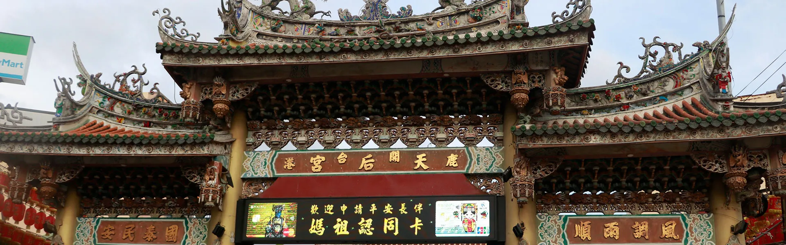

鹿港天后宮
鹿港天后宮的建立，可追溯至清康熙年間（約1684年之後）。當時台灣隨著清朝施行「開台政策」，大量福建移民由泉州、漳州沿海地區遷徙而來，鹿港因地勢良好、港灣適合泊船，成為台灣中部的對外貿易重鎮。在這波移民潮中，來自福建湄洲島與泉州沿海地區的居民，隨身恭迎媽祖神像（稱為「湄洲媽祖」或「湄洲進香祖媽」）
作為航海庇佑之神。為了安置神像、維繫信仰與族群凝聚力，他們於鹿港建造了這座媽祖廟。
鹿港龍山寺
鹿港龍山寺是台灣很有名的寺廟，在距今約300年前建立，是從中國泉州那邊來的移民蓋的。他們把家鄉的觀音神像請來台灣，希望神明保佑大家平安。這間廟主要拜觀音菩薩，是保護人們的神明。這座廟最特別的地方是它的建築，裡面有很多用木頭雕刻出來的花、鳥、動物和人物，超級細緻，看起來像藝術品一樣。
屋頂還有特別的「燕尾脊」，像是鳥尾巴翹起來，這是傳統廟宇才有的設計。以前龍山寺曾經被火燒過，也被風吹壞過，歷經多次重建才成為現今我們看到的樣子。現在，它是台灣保護得很好的古蹟之一。很多人來鹿港一定會來參觀這裡，也有很多學校帶學生來看這些古老又美麗的建築。
彰化縣政府城市暨觀光發處 鹿港鎮旅遊管理部門
彰化縣的旅遊與風景區的管理單位，所有關於彰化縣的地方活動、中央規劃與季節，鹿港鎮的活動也都會在這邊公告
鹿港旅遊提醒 有些事情總要多注意
鹿港是一個有300年歷史的小鎮，鎮內的歷史景點特別多，但300年前的道路規劃到現今已不敷使用，所以當您在看路邊的一些歷史景點時一定要留意自身安全，才不會稱稱興而來敗興而歸
鹿港鎮停車資訊 可能停滿
當你開車來到鹿港漫遊總會需要找地方停車，這裡是鹿港可以停車的地方，你可以依你想去的景點選擇比較近的停車場，如果你想慢慢走完整個鹿港也可以停在比較遠的地方在用一整天的時間慢慢的走遍這300年歷史的小鎮